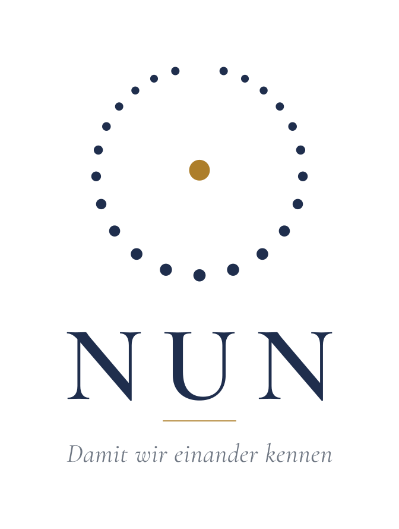

Über NUN
Ein Buchstabe, ein Augenblick, ein Haus
NUN ist der arabische Buchstabe Nuun und das deutsche Wort für den Augenblick, in dem wir leben. Das Jahrbuch trägt beides. Es liest die islamischen Fächer aus ihren Quellen für die Gegenwart und nimmt die Wissenschaften auf, die muslimische Fragen zum Gegenstand haben.
Damit wir einander kennen

Sechs Aufgaben
Ort für den Nachwuchs
Studierende und Absolventinnen und Absolventen der Islamologie veröffentlichen in der Werkstatt ihre Arbeiten.
Gedächtnis der Tagung
Die Vorträge des jährlichen Islamologentags erscheinen ausgearbeitet und zitierfähig.
Stimmen von außen
Externe Fachleute, muslimische und nichtmuslimische, schreiben zu bestimmten Fragen.
Medium des Instituts
Die Bildungsarbeit des Islamologischen Instituts und seiner Kooperationspartner hat hier ihren Ort.
Die Fächer im Zentrum
Tafsiir, Hadiith, Fiqh, ‘Aqiidah und Siirah, zeitgenössisch gelesen und ausgelegt.
Wissenschaft im Kontext
Geistes-, Geschichts-, Sozial-, Kultur- und Naturwissenschaft, Philosophie und Pädagogik im muslimischen Kontext, mit Blick auf das Leben in Europa.
Das Haus
Herausgeber, Schriftleitung, Beirat
Herausgeber ist das Islamologische Institut in Wien. Die Schriftleitung verantwortet die Linie und jeden Beitrag. Ein Beirat aus den islamischen Fächern, der Geschichte, Philosophie, Pädagogik und Soziologie begutachtet und berät.
Dr. Mirza Memić
Schriftleitung
Vorname Nachname
Redaktion
Grundsätze
Fest und offen
Fest in den Quellen, in der Methode und in der Form. Offen im Gespräch, im Gegenstand und in der Leserschaft. NUN betreibt keine Apologetik und keine Polemik. Es beschreibt, belegt, denkt und erzählt. Es gehört keiner Partei und vertritt keine Verbandsinteressen. Jedes Zitat ist am Original geprüft, jede Zahl nachgerechnet, jede Umschrift folgt Zaidan.
Blattlinie und Impressum